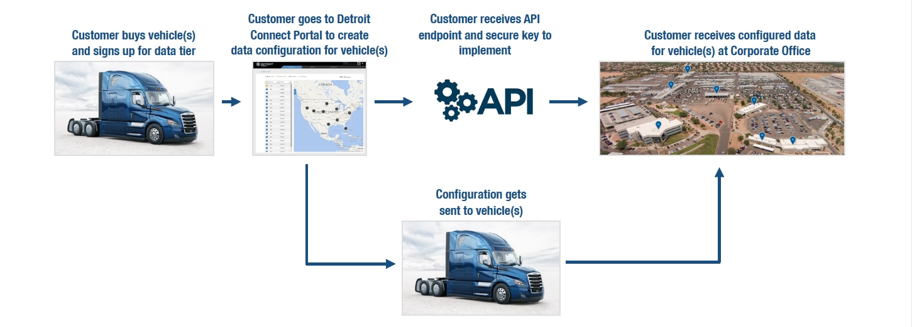
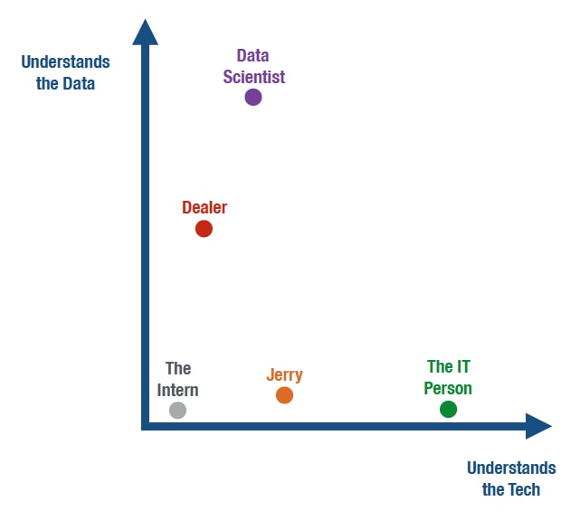
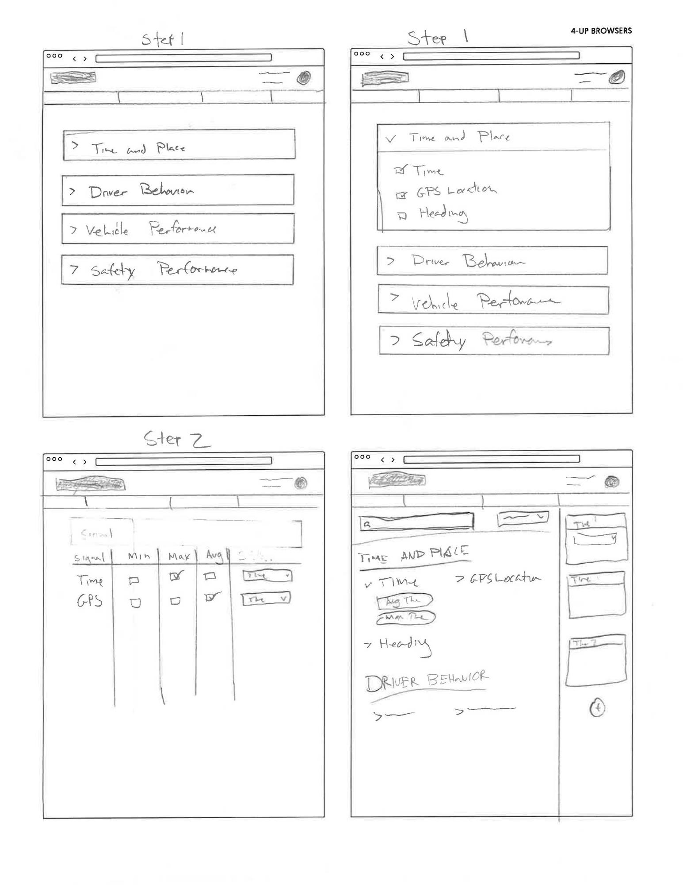
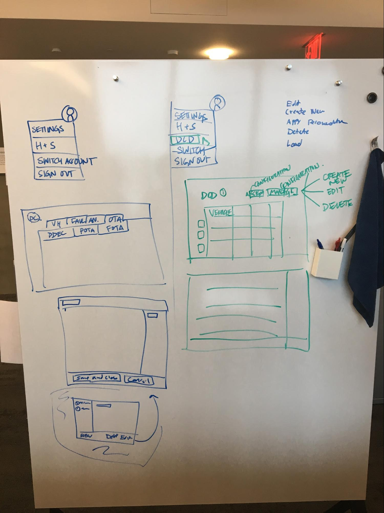
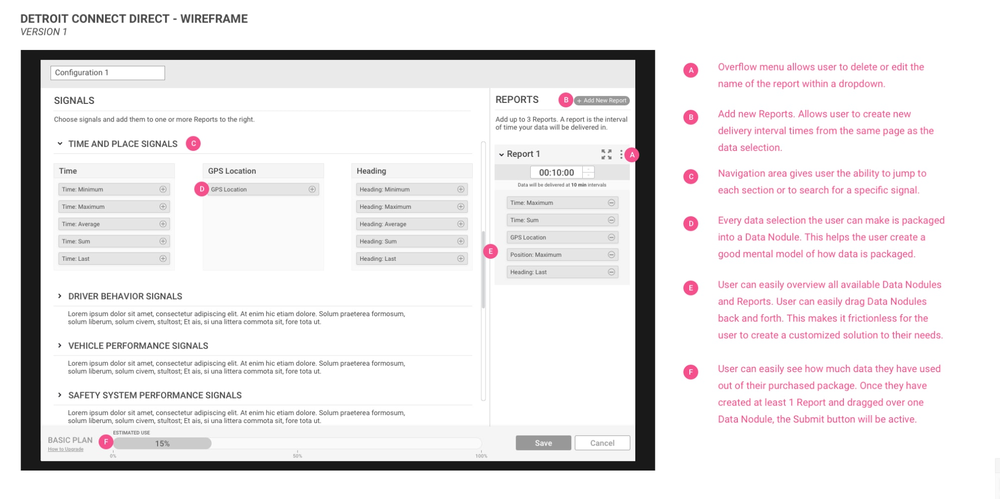
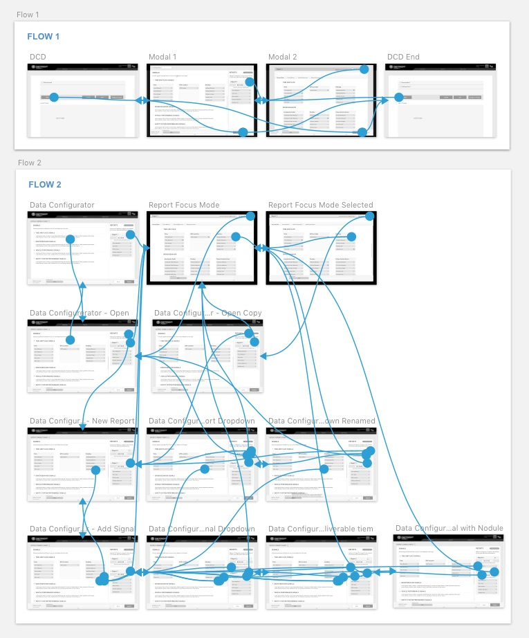
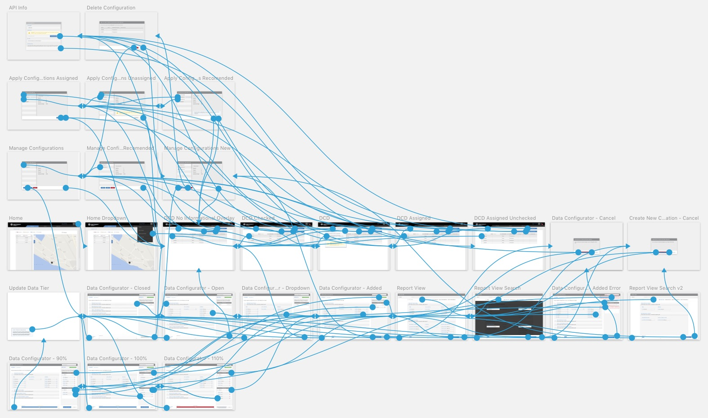
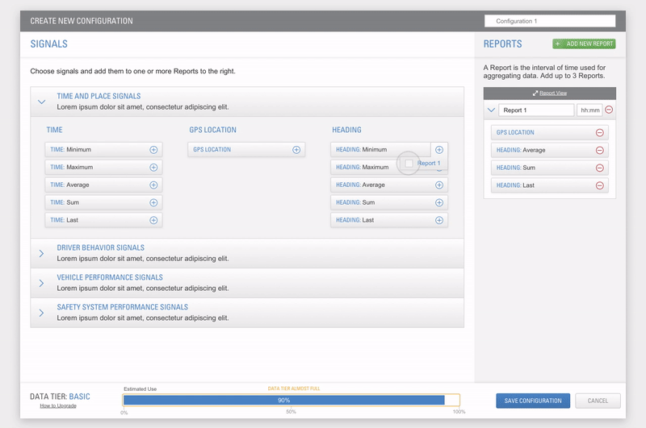

Detroit Connect Direct
Assignment
Build a tool for customers to customize their desired data—truck performance, location, and safety data—so they can receive it directly from the DTNA backend in their desired format.
UX Challenge
Design a configuration tool that is easy to comprehend and enjoyable to use—for everybody from the intern to the data scientist—and can be used by multiple users for different steps.
Business Benefit
Detroit Connect Direct provides an essential and valuable service to DTNA’s most valuable customers; it will generate revenue for DTNA through the sale of data tiers at vehicle point-of-sale.
Understanding the Needs and Timeline
In the beginning there was only a very broad idea brought to us from Daimler. They had some very rough ideas sketched out with very few business needs.
We had a kickoff meeting and did some stakeholder interviews. From this we identified key people we would need to meet with and get more information from. We also identified what meetings we would need over the next few weeks to succeed and to setup some milestones.
Understanding the Customer Flow
After a few whiteboarding sessions with key stakeholders we were able to understand Daimler’s plan for the customer flow and how Detroit Connect Direct would fit in. This was essential to establish prior to creating flows.
 Customer FlowUnderstanding the User
Unfortunately we did not have the budget or time to talk to the user directly. However, Daimler takes pride in consistent communication with its users so we were able to gather user information from Daimler Project Managers.
We quickly realized that there would be a wide spectrum of users and there may be different users for different parts of the flow.
Key Terms & Understanding
At this point, it was important to align with the client on feature names and on key business decisions made. This step helped avoid confusion and kept all the different teams aligned.
This also had a the added benefit of helping us zero in on our scope.
- Customer buys a subscription for a data tier per vehicle
- For MVP, fleets will only be allowed one data tier per fleet: Basic, Standard, or Premium
- If a fleet desires to upgrade, will need to upgrade all vehicle subscriptions
- Customer creates a configuration for that tier
- For MVP, fleets will only be allowed one active configuration per fleet
- Configurations may not exceed their data tier (determined by matrix)
- DTNA will also provide a recommended configuration, but not a default
- A configuration is made up of reports per time interval
- For MVP, fleets are only allowed up to three time interval reports
- Time intervals will only be greater than 1 minute and will be available in 1 minute increments
- A report is made up of multiple nodules, which are made up by a signal plus a treatment
- A signal is a data type (e.g. Ambient Temperature, ESC Alert)
- All vehicles do not support all signals
- A treatment is a aggregation type for that data (e.g. Minimum, Maximum, Average)
- All signals do not support all treatments
- Customer must apply desired configuration to their vehicles to receive data
Sketching and Whiteboarding
After I felt like I had a good grasp around what was needed, I started sketching ideas out for the main configuration screen which was the most difficult problem.
The user would have a finite amount of data to use. Daimler would create a calculator that would factor in how many signals the user wanted, their treatments, and the interval of time that they would be delivered. The challenge I faced here was figuring out how to communicate this clearly to the user.
 A few of my first sketches.  Whiteboarding with Product Owner around my IdeasAfter sketching, I had a much better grasp of where the interface would be headed. I chose two of my best ideas and shared them with the Product Owner. We chose one, created a higher fidelity wireframe, and showed this to the client.
 First wireframe shared with clientThis became a great jumping off point for more discussion and deeper understanding with the client. Most of the first concept lived and made it to the final design.
Prototyping and Deeper Wireframing
Now that I knew we were aligned with the client and they were happy with what I had, it was time to dive deeper into the overall flow. I started by wireframing all the different pages and states, and linking together into an Invision wireframe.
 Exploring two different flowsNext, I went back and did some sketching and whiteboarding, as well as I playing around with many different flows and options within Sketch and Invision. This gave me the ability to emulate the flow that the user would experience and easily share it with the Product Owner and developers to get their feedback on my ideas.
I did a tremendous amount of iteration even though I had a strong solution on hand; I wanted to be sure that there weren’t better solutions. So even though I had the sign off from the stakeholders, PO, and developers on my proposed solution I continued to play around with other ideas and flows. I found it useful to go beyond Invision and add some animations to the flow using Principle.
Exploring two different flowsFinal Design and Prototyping
Once I was confident and happy with my solution, it was time to create the entire design. At this point I had mapped out all the complicated flows and states. I made sure that all states and flows were mapped out in the final design and I designed all the elements.
The prototype that I created became a very valuable tool for internal team conversations and to use in conjunction with user stories. The client also used it to show to their customers and to collect feedback.
 Final design, flow, and prototypeFinal Touches
I attended all backlog grooming meetings, helped define user stories, and answered questions the developers had before development started.
I also took the time to identify any needed animations. We were on a very tight timeline, so I only added one animation that was necessary for the usability of the website and that was adding Nodules to Reports. I knew that the user needed a small animation for context and to show where the Nodule was added. I used Principle to come up with a few different ideas and in the end delivered a video of what the animation should look like.
 Adding a data to report animation